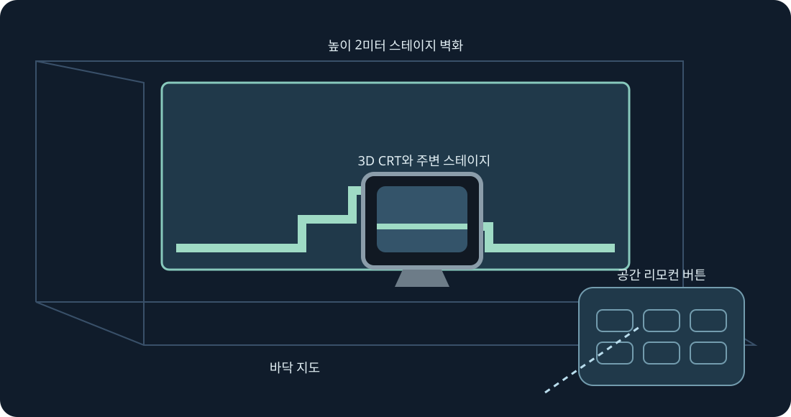

스테이지 벽, 바닥, 아케이드 테이블, CRT와 곡면 갤러리. 실험적 XR 미리 보기입니다. 양쪽 그립으로 크기를 조절하세요.
실험적 XR 미리보기입니다. 설치 후 Quest 3에서 0.4 모음이 보이는 것을 사용자가 확인했고 프레임 제출을 기록했습니다. 0.5 빌드는 별도로 컴파일하고 검사합니다. 추적, 편안함, 패스스루, 방 배치, 지속 플레이는 실물 검증이 필요합니다.
나중에 시험할 때 개발자 모드를 켜고 SideQuest 또는 adb install -r로 공개 ARM64 APK를 설치하세요. 알 수 없는 출처에서 Mario Compilation Ultra XR을 열고 시스템 선택기로 카트리지나 ZIP을 고른 후 플레이하세요. All-Stars + World와 Yoshi’s Island는 별도로 가져옵니다. 공개 APK에는 ROM이나 진행 정보가 없습니다.
레벨, 원래 CRT, 리모컨 또는 옵션을 대상으로 고릅니다. 한 그립으로 이동·회전하고 두 그립으로 위치 잠금 중에도 레벨 크기를 바꿉니다. 미세 조정, 절반, 두 배, 초기화도 가능합니다. 복구로 화면을 가까이 되돌립니다. Y는 옵션을 열며 플레이 페이지에 모든 SNES 버튼이 있습니다.
핀치로 스틱을 끌고 다른 손으로 버튼을 누르세요. 중지 핀치로 손잡이를 잡습니다. 추적이 끊기면 입력을 해제합니다.
새 설치는 90 Hz와 높이 2m의 투명 AR 벽화를 요청합니다. 지원하지 않으면 가능한 주사율로 전환하며 게임 속도는 그대로입니다. 자동 벽 배치에 선택적 장면·앵커 권한과 방 스캔을 씁니다. 수동 배치와 바닥 보정도 가능합니다. 패스스루는 런타임이 제공하며 인터넷, 마이크, 카메라 영상 권한을 요청하지 않습니다.
반투명 미리 보기는 안내용이며 먼 물체를 시뮬레이션하지 않습니다. 검증된 위치는 시작부터 표시할 수 있고 학습한 이미지는 기기의 게임에서만 얻습니다.
아케이드 테이블은 불러온 구역을 표시합니다. 원래 물리와 오브젝트 활성화 규칙을 유지합니다.
PC 빠른 조작: 오른쪽 스틱을 누른 채 방향키 좌우로 확대·축소, 위는 1:1, 아래는 전체 지도, A 고정, B 원래 카메라, X 캡처, Y 플레이어 추적입니다. 놓으면 SNES 조작으로 복귀합니다. F1 또는 메뉴 Y 도움말로 그림 설명을 엽니다.
SNES: D-pad · A · B · X · Y · L · R · Start · Select
Touch: A → SNES B · B → SNES Y · X → SNES A · RT → SNES X · R3 → Start · LT → Rewind · Y → 설정 패널 이동
Parity · Validation